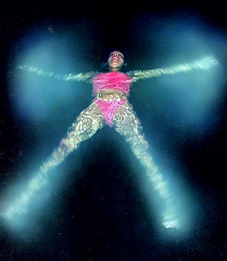
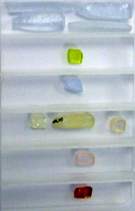

| |
|
Courrier des Lecteurs
2010 - saison 1/3
|
|
 |
5/3/2010 - D.M./V.H.
Phosphorescence
alimentaire,
divers photoluminescence
cdl cdl cdl
Navigation, sommaire
thématique
cliquer ici
Dialogue antérieur -
Dialogue suivant
|
|
PM :
Après lecture de votre page sur la
fluorescence et la
phosphorescence, je
m'interrogeais sur la possibilité de créer quelque chose de
phosphorescent qui se déclinerait dans l'alimentaire. C'est-à-dire,
est-ce qu'un des procédés actuel pour créer une réaction de
phosphorescence pourrait être ingéré ?
|
|
|
|
|
|
Dtp :
En fluorescence oui cela existe, mais en
phosphorescence la question se pose avec plus de doutes a priori.
Dans la foulée, ajoutons une autre
question pour
Jean-Louis qui va nous
répondre : la phosphorescence existe-t-elle dans le monde végétal ou
animal ?
Jean-Louis :
Sur la première question, non ce n'est pas possible. La
phosphorescence demande des propriétés qui sont assez peu compatibles
avec l'alimentaire. C'est généralement inorganique (donc insoluble,
d'où problèmes pour l'ingurgiter et surtout pour l'élimination), et il
y a très souvent des métaux, donc problèmes de toxicité.
Les lecteurs ont de drôles d'idées :)
Dtp :
C'est plaisant, c'est exotique ! Il y a peut-être un fantasme
(sympathique et sûrement très ancien) dans cette idée d'ingérer de la
lumière : devenir soi-même lumineux. Un dieu gaulois, Lug (le bien
nommé) avait une tête tantôt de lumière, tantôt d'or selon les
légendes qui d'ailleurs sont répandues sur tout l'aire celtique. Cela
a vraisemblablement donné sous une forme christianisée et appauvrie
(une vague histoire de trésor) la fameuse appellation "Tête d'or"
chère aux habitants de Lugdunum (1).
Jean-Louis :
Concernant les animaux lumineux ce n'est pas de la phosphorescence,
c'est de la chimioluminescence (2).
Et puis manger des vers luisants ou des méduses...
|
|
|
|
|
|
Dtp :
Certains animaux marins bioluminescents
très petits doivent pouvoir être "bus" (avec courage là aussi). Cela
ne donnerait qu'un résultat certes symbolique, poétique, mais
visuellement éphémère, pour ainsi dire de la coupe aux lèvres. Il
existe un moyen d'obtenir un effet visuel peut-être plus riche dont
voici un exemple :

Formation de plancton
photoluminescent autour
d'une nageuse à "Bio Bay",
Puerto Rico
lien externe -
autres images sur Google
Ce "plancton" est malin. Quand un prédateur approche, le ban
se regroupe pour éclairer une autre proie afin de détourner son
attention sur elle. C'est une piste pour un plasticien. Un vrai
travail avec du vivant qui réagit. Reste à reproduire une colonie et
tout son environnement. Une gageure.
|
|
Une piste : les
planctons luminescents |
|
|
|
Profitons de l'occasion pour revenir sur
un point plus théorique qui n'est guère abordé dans les articles de
Dotapea consacrés aux phénomènes de
photoluminescence.
Qu'est-ce qui fait que dans une telle
configuration de la matière, un électron mettra un certain temps à
relâcher un photon alors que dans d'autres ils transmettront tout de
suite, qu'en penses-tu ? Sait-on d'où provient cette paresse, cette
temporisation ?
Jean-Louis :
Quand un atome ou une molécule est excité (thermiquement,
électriquement, optiquement, ...), un ou plusieurs électrons passent
sur des niveaux énergétiques supérieurs. Le retour à la normale se
fait progressivement, avec émission de chaleur, ou plus directement
avec émission de lumière (fluorescence).
Dans certains cas, le retour à la
normale se fait très lentement parce que l'électron s'est retrouvé sur
un niveau "interdit". Donc en principe il
ne devrait même jamais en descendre. Il en redescend mais lentement.
D'où la durée. Ce genre de phénomènes apparaît le plus souvent dans des
composés inorganiques à base de métaux, notamment
les terres rares.
Dtp :
D'accord.
Mais un niveau interdit... qu'est-ce que c'est ? On peut entrevoir
ici ou là le terme "niveau piège", c'est ça ?
Jean-Louis :
Les électrons ne peuvent pas aller comme ils veulent sur n'importe
quel niveau. Il y a des "règles de sélection" qui donnent les
probabilités de transition. Certaines transitions sont interdites,
i.e. très improbables. C'est quantique,
donc rien n'est blanc ou noir. Un électron peut néanmoins arriver "par
derrière" sur un niveau d'où en principe il ne peut pas descendre. Il
va donc y rester longtemps.
Dtp :
Donc il existe des règles de base et
aussi, comme c'est à une échelle quantique, une probabilité qu'il y
ait des exceptions, c'est ça ?
Jean-Louis : C'est comme pour
l'effet tunnel,
en principe l'objet quantique à une probabilité faible mais non nulle
de passer à travers le mur.
|
|
Eléments paresseux et niveaux
interdits |
|
|
|
Dtp :
Une petite parenthèse maintenant.
[passer à la suite]
On a vu (article
Les liaisons entre atomes)
qu'avec les métaux, en général un électron peut assez librement
circuler parmi un nombre important d'atomes. Ce sont les "liaisons
métalliques". Mais sauf exceptions ça se passe entre métaux et si
nous plaçons
un oxygène ou un autre non-métal dans le cheptel métallique, nous
verrons apparaître des liaisons covalentes ou ioniques selon le
Δχ
(voir lien précédent). Plus compliqué, dans une même molécule il peut
y avoir un delta <=2 entre 2 atomes et >2 entre deux autres.
Et c'est là la question : comment s'organise le nuage ? Est-ce que les
niveaux électroniques sont différents de sorte que plusieurs types de
liaisons puissent avoir
lieu simultanément ? Est-ce qu'un liaison
métallique est compromise dès que l'on introduit des non-métaux ?
Jean-Louis :
Dans une molécule les électrons sont localisés, c'est pas une
structure de bandes [sur les bandes, lire
passage in La valence]. Donc il peut y avoir des excès et des lacunes à
différentes endroits. Et il peut exister différentes liaisons dans la
même molécule, par exemple covalentes, ioniques, hydrogène, ...
|
|
Liaisons diverses
dans un nuage |
|
|
|
Dtp :
Concernant les terres rares que tu
évoquais comme des atomes importants pour les phénomènes de
phosphorescence, on dirait qu'il existe un lien avec une particularité
de la sous-couche dite 4f des lanthanides, qui en représentent la
majeure partie
(3). On lit dans une célèbre
encyclopédie participative (pardon pour l'aspect un peu aride de cette
citation à lire en diagonale éventuellement) que :
|
|
Pourquoi les terres rares ? |
|
"(...) les lanthanides sont
caractérisés par le remplissage de la sous-couche 4f, et les orbitales
f écrantent le noyau atomique moins efficacement que les autres
orbitales : par ordre d'efficacité d'écrantage décroissant, les
orbitales atomiques se rangent en s > p > d > f ; en raison de cet
écrantage imparfait, la charge nucléaire agit davantage sur les
électrons périphériques lorsque le numéro atomique augmente, de sorte
que le rayon des atomes et des ions de lanthanides diminue du lanthane
jusqu'au lutécium" [c'est la "compression des lanthanides"]
L'écrantage et encore davantage l'efficacité d'écrantage sont des
concepts que l'on n'abordera pas davantage ici, l'important étant de bien saisir que c'est la
spécificité d'une seule couche qui favorise des phénomènes
particuliers, dont peut-être l'erreur d'aiguillage que tu évoquais, à
la source des phénomènes de photoluminescence.
Quoi qu'il en soit, si l'on prend par exemple les variantes de CaWO4, qui
(comme ZnS ou CaS) est une base standard pour différents pigments
phosphorescents, on s'aperçoit que les éléments utilisés en complément
pour obtenir de la phosphorescence sont bien
tous des lanthanides, donc des terres rares.
Ci-dessous, CaWO4-Nd, -Ce, -Pr, -Sm, -Er, -Eu :

Courtoisie de
SurfaceNet.de,
Peter Droste © -
Lien
_____
(1) Lugdunum (Lyon) signifierait en
latin la colline de Lug ou de lumière.
(2) On dit aussi bioluminescence. De
même pour l'occasion on pourrait ressortir du grenier de nos mémoires
l'adjectif "noctiluque", (ou noctulescent) signifiant luisant pendant
la nuit. D'un emploi rare mais approprié.
(3) Les terres rares sont les quinze
lanthanides - voir lanthane et suivants
in table périodique des éléments - plus le
scandium et l'yttrium, dans la même
colonne (même nombre d'électrons dans la couche externe).
|
|
("écranter" signifie
"faire écran) |
Retour
début de page
|
|

 Communication
Communication
|
|